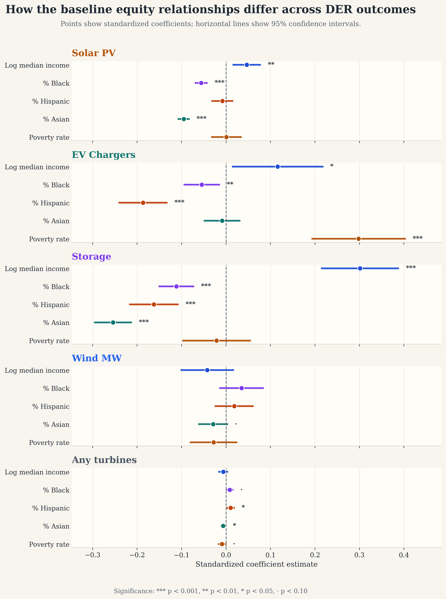
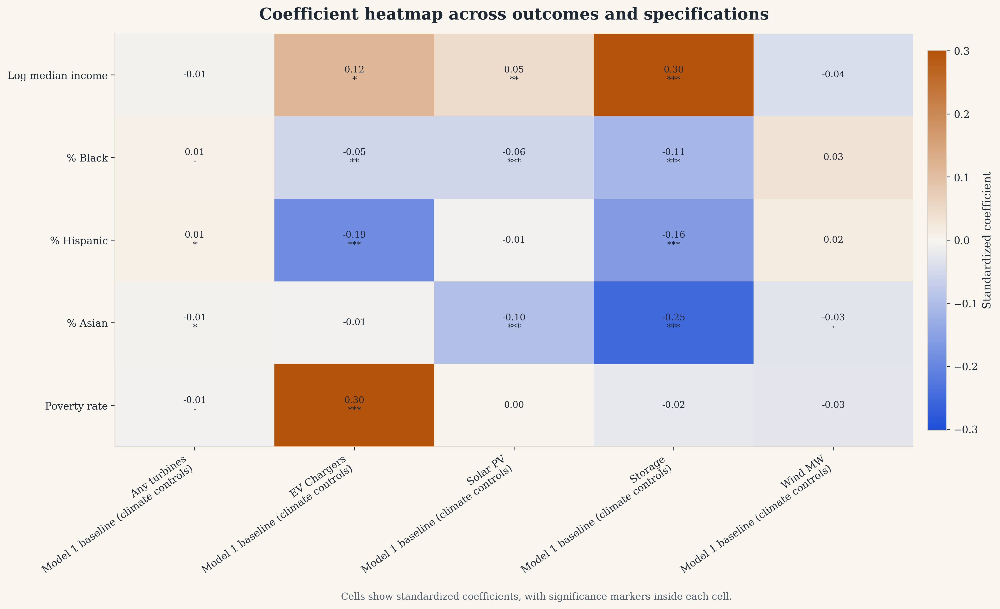

Racial and Socioeconomic Disparities in Distributed Energy Resource Adoption: Evidence from California ZIP/ZCTA Areas Across Solar, Storage, and EV Charging
As distributed energy resources (DERs) such as rooftop solar, battery storage, and EV charging become more central to decarbonization and resilience planning, the benefits they deliver are not guaranteed to be shared evenly. Prior equity-focused work on rooftop PV shows that adoption can remain stratified by race and ethnicity even after accounting for income and related socioeconomic characteristics (Sunter et al. 2019). This paper extends that framing to a multi-DER setting. I built a California ZIP/ZCTA-level dataset that integrates rooftop PV, storage, and EV charging records with American Community Survey demographics and contextual controls, including climate, renewable resource potential, utility territory, and electricity demand. Using a consistent model ladder across DER types, I test whether racial and socioeconomic disparities persist after controlling for area-level proxies for the ability to adopt. I then compare the magnitude and direction of disparities across technologies to identify where equity gaps are most pronounced and where policy and market design may be contributing to uneven participation in the clean energy transition.
1. Introduction
1.1 Motivation and problem
DER adoption is accelerating in California, pushed by climate policy, electrification, and the growing sense that reliability is no longer something households can take for granted. As costs fall and incentives expand, households and communities adopt technologies that cut emissions and sometimes lower energy bills. But adoption does not move like a wave that reaches everyone equally. If the ability to adopt depends on financing, information, housing conditions, permitting, or whether local markets can support installation and maintenance, then the clean energy transition can reproduce existing inequities rather than reduce them.
Most of the evidence on who benefits from DER deployment has centered on a single technology, especially rooftop solar. That literature matters, but it is no longer the whole story. Storage increasingly determines who gets backup power when the grid fails. EV charging infrastructure shapes who can participate in transportation electrification. If disparities persist across multiple DERs, then the transition’s financial, resilience, and mobility benefits will also be distributed unevenly.
A practical barrier is that multi-DER data are fragmented across agencies, technologies, and geographies. A core contribution of this project is therefore to assemble a consistent ZIP/ZCTA-level dataset across DER types so the equity question can be tested under comparable outcomes, controls, and modeling assumptions.
1.2 Research question
The central question is whether race and socioeconomic characteristics predict where DERs are adopted across California ZIP/ZCTA areas, and whether those disparities remain after controlling for observed area-level proxies for adoption capacity, geographic context, resource potential, utility territory, and infrastructure.
Three related questions guide the analysis. First, are disparities similar across solar PV, battery storage, and EV charging, or does the equity story change by technology? Second, when income, education, and other socioeconomic controls are included, do race and ethnicity variables still explain meaningful differences in deployment intensity? Third, how much variation is explained by place-based and institutional factors such as utility territory and electricity demand, and how much remains within those boundaries?
1.3 Contributions
This paper contributes in three ways. It builds a harmonized multi-DER California ZIP/ZCTA dataset designed for equity analysis. It applies a consistent model ladder across DER types so disparities can be compared directly rather than technology by technology under different assumptions. And it provides interpretable evidence on how disparities change when additional socioeconomic, contextual, institutional, and infrastructure controls are introduced.
2. Background and Prior Work
2.1 What prior PV equity research shows
A consistent takeaway from the rooftop solar equity literature is that adoption does not simply spread as technology costs decline. It tracks neighborhood demographics, socioeconomic status, and structural constraints in ways that can create or reinforce inequality. California-specific work on distributed solar and environmental justice shows that PV deployment is strongly patterned by place-based socioeconomic conditions rather than spreading evenly across communities (Lukanov and Krieger 2019). National work by Sunter and coauthors goes further by showing that racial and ethnic disparities in rooftop PV deployment remain even after adjusting for income and related socioeconomic variables (Sunter et al. 2019). Work on grid infrastructure limits in California adds a further mechanism by showing that disadvantaged communities can also face hosting-capacity constraints that limit DER deployment even when interest exists (“Inequitable access to distributed energy resources due to grid infrastructure limits in California,” 2021).
2.2 Why multi-DER equity may differ by technology
DER equity is not interchangeable with solar equity because different technologies require different forms of access. Rooftop PV depends heavily on roof control, physical roof suitability, financing, and installer presence. Battery storage overlaps with PV but adds a stronger dependence on upfront capital, resilience value, and incentive design. EV charging differs more sharply because the “adopter” is often not a single homeowner but a mix of households, workplaces, municipalities, multifamily property owners, and commercial hosts. Public charging also depends on siting incentives, land use, and electrical infrastructure in ways that are distinct from rooftop technologies.
These differences imply that the barriers to adoption are technology-specific. A multi-DER analysis therefore matters not just because it broadens the set of outcomes, but because it allows the paper to test whether inequity is one repeated pattern or whether different technologies produce different, potentially compounding, forms of unequal access.
3. Data and Measures
3.1 Unit of analysis
The unit of analysis is the ZIP-code level, implemented using Census ZIP Code Tabulation Areas. ZIP/ZCTA geography is the most practical common denominator across the available DER and demographic data sources. The analysis is framed as a 2023 cross-sectional snapshot using the most recent aligned observations available through that year.
3.2 Outcomes
To make outcomes comparable across technologies, each DER measure is converted into a population-normalized intensity metric and then transformed using log(1 + rate). The three primary outcomes are y_chargers, based on total chargers per 1,000 residents; y_pv, based on PV system size in kW DC per 1,000 residents; and y_storage, based on storage capacity in MW per 100,000 residents. Supplementary analyses also examine charger subtypes and wind-related outcomes.
3.3 Key predictors
The main explanatory variables fall into two categories. The first is racial and ethnic composition, measured using ZIP/ZCTA population shares such as pct_black, pct_hispanic, and pct_asian. The second is socioeconomic status, including log_median_household_income, poverty_rate, and in expanded specifications variables such as educational attainment and housing value.
3.4 Controls
Controls are included to account for non-demographic differences across places that may shape DER deployment. These include climate and resource variables, utility territory, broader geographic adjustments, infrastructure variables, and an annual electricity demand proxy. Together these controls are intended to separate demographic disparities from observed variation in physical suitability, institutional context, and underlying load.

3.5 Descriptive distributions
Before turning to regression coefficients, it is useful to see how uneven the raw distributions already are. The three DER outcomes are right-skewed, and the socioeconomic context variables are spread across materially different neighborhood conditions. This descriptive step makes the later model comparisons easier to interpret.

| Variable | N | Mean | Median | P25 | P75 |
|---|---|---|---|---|---|
y_pv | 1,341 | 0.438 | 0.380 | 0.174 | 0.616 |
y_storage | 1,325 | 1.809 | 1.822 | 1.161 | 2.404 |
y_chargers | 1,161 | 0.960 | 0.703 | 0.354 | 1.272 |
pct_black | 1,418 | 0.043 | 0.021 | 0.007 | 0.052 |
pct_hispanic | 1,418 | 0.345 | 0.275 | 0.152 | 0.492 |
pct_asian | 1,418 | 0.119 | 0.066 | 0.023 | 0.156 |
log_median_household_income | 1,386 | 11.440 | 11.434 | 11.169 | 11.705 |
poverty_rate | 1,403 | 0.127 | 0.105 | 0.070 | 0.163 |
pct_bachelors_plus | 1,418 | 0.359 | 0.324 | 0.188 | 0.506 |
ghi_mean_kwh_m2_day_2023 | 1,418 | 5.118 | 5.158 | 4.855 | 5.339 |
log_kwh | 1,240 | 8.329 | 0.000 | 0.000 | 18.231 |
4. Methods
4.1 Empirical Approach
This paper uses a cross-sectional regression framework to examine whether racial/ethnic and socioeconomic differences are associated with distributed energy resource deployment intensity across California ZIP/ZCTA areas. The main goal is to test whether disparities in DER adoption persist after accounting for differences in adoption capacity, geography, physical suitability, and institutional context.
To do this, I estimate a consistent sequence of models for each DER outcome. This stepwise approach makes the results easier to interpret because changes in the coefficients of interest can be linked to specific added controls rather than to a single opaque specification. It also supports direct comparison across technologies, which is central to the paper’s multi-DER framing.
The three main outcomes are ZIP/ZCTA-level deployment intensity for rooftop solar PV, battery storage, and EV charging. Each is population-normalized and transformed using a log(1 + rate) specification to reduce skew and retain observations with zero deployment. The main explanatory variables of interest are racial/ethnic composition measures and socioeconomic indicators. I then add contextual controls that capture climate, renewable resource potential, utility territory, built-environment structure, and broader infrastructure conditions.
Because the analysis is ecological and cross-sectional, the results are interpreted as area-level disparities rather than as individual household adoption behavior. In other words, the coefficients describe how DER deployment differs across ZIP/ZCTA areas with different demographic and socioeconomic characteristics, conditional on the included controls.
4.2 Dataset Construction and Sample
The analysis uses a harmonized California ZIP/ZCTA-level dataset created by merging multiple DER source files with demographic, climate, utility, and infrastructure controls. The final panel combines measures of solar PV capacity, battery storage capacity, and EV charging infrastructure with American Community Survey variables and place-based controls.
DER measures are first constructed separately by technology and then aggregated to the ZIP/ZCTA level. Solar PV capacity is derived from Tracking the Sun installation records. Battery storage is built from a California storage dataset containing location and capacity information. EV charging infrastructure is constructed from charger-level records that include charger type and location. Where source files include latitude/longitude rather than directly usable ZIP codes, records are spatially assigned to ZIP/ZCTA polygons before aggregation.
After source-specific cleaning, the DER measures are merged with contextual predictors. Demographic and socioeconomic variables come from the 2023 American Community Survey 5-year estimates and include total population, median household income, median housing value, educational attainment, poverty, and race/ethnicity shares. Climate and renewable resource controls are derived from NASA POWER and include temperature-based measures, degree days, solar irradiance, and wind resource variables. Utility territory is assigned using a ZIP-to-utility spatial crosswalk, and electricity demand is proxied using annualized utility usage data aggregated to ZIPs.
The unit of analysis is the ZIP/ZCTA. I use ZCTAs because they provide the most practical common geography across the available DER and demographic sources. The study is designed as a 2023 cross-sectional snapshot, using the most recent data aligned as closely as possible to that year.
In the regression stage, ZIP/ZCTAs with total population below 1,000 are excluded from outcome construction. This avoids unstable per-capita rates in very small areas.
4.3 Outcome Variables
To make the outcomes comparable across technologies, each DER measure is converted into a population-normalized deployment intensity metric and then transformed using log(1 + x). This helps reduce skew and allows ZIP/ZCTAs with zero deployment to remain in the sample.
The three main outcomes are defined as follows.
For EV charging:
chargers_per_1k = (total_chargers × 1000) / population
y_chargers = log(1 + chargers_per_1k)
For solar PV:
pv_kW_per_1k = (PV_system_size_DC × 1000) / population
y_pv = log(1 + pv_kW_per_1k)
For battery storage:
storage_MW_per_100k = (storage_capacity_mw × 100000) / population
y_storage = log(1 + storage_MW_per_100k)
Storage is scaled per 100,000 residents rather than per 1,000 because storage deployment is much smaller and more uneven at the ZIP level, so the larger denominator keeps the raw rate in a more interpretable range before transformation.
In supplementary analysis, I also examine more disaggregated charging outcomes, including Level 1, Level 2, and DC fast chargers separately, along with wind-related measures used mainly as contextual or exploratory comparisons. The core paper, however, focuses on the three outcomes above.
4.4 Key Explanatory Variables
The main explanatory variables fall into two groups: racial/ethnic composition and socioeconomic status.
The race/ethnicity variables are ZIP/ZCTA-level shares of the population identifying as Black, Hispanic/Latino, and Asian. These variables are included to test whether DER deployment differs systematically across communities in ways that are not fully explained by socioeconomic conditions alone.
The socioeconomic variables are intended to proxy for “ability to adopt.” The core measures are log median household income and poverty rate. Additional socioeconomic variables used in extended specifications include percent bachelor’s degree or higher and log median housing value. These variables capture dimensions of financial capacity, housing-related access, and social advantage that plausibly shape whether a community is able to adopt rooftop PV, install behind-the-meter storage, or attract charging deployment.
The central empirical question is whether the race/ethnicity coefficients weaken substantially once these socioeconomic proxies are included, or whether meaningful disparities remain after accounting for them.
4.5 Contextual Controls
I include several categories of place-based controls to account for non-demographic factors that may shape DER deployment.
First, I include climate and resource controls. Baseline models use heating and cooling degree days to capture broad climatic differences across California. Alternative specifications use more technology-specific contextual variables, including global horizontal irradiance for solar PV and wind speed measures for wind-related outcomes. Temperature controls are also used in some robustness checks.
Second, I include institutional controls through utility territory fixed effects. Utility territories matter because rates, interconnection processes, incentive administration, infrastructure conditions, and historical investment can differ substantially across service areas. Including utility fixed effects helps isolate within-utility differences in deployment.
Third, I include broader geographic controls in selected specifications, including total population, latitude and longitude, and county-based adjustments. These help account for large-scale regional gradients and spatially correlated unobservables.
Fourth, I include electricity demand and infrastructure context in later models. Annual electricity consumption serves as a proxy for underlying load and commercial activity, especially relevant for EV charging. I also estimate models that add existing infrastructure measures to test whether disparities are partly explained by broader differences in the local energy landscape.
4.6 Baseline Regression Specification
The main estimation approach is ordinary least squares regression using the transformed ZIP/ZCTA-level deployment outcomes. The baseline specification is:
y_z = β_0 + β_1 Income_z + β_2 Black_z + β_3 Hispanic_z + β_4 Asian_z + β_5 Poverty_z + γX_z + ε_z
where y_z is the DER deployment outcome in ZIP/ZCTA z, Income_z is log median household income, Black_z, Hispanic_z, and Asian_z are race/ethnicity population shares, Poverty_z is the ZIP/ZCTA poverty rate, X_z is a vector of contextual controls, and ε_z is the error term.
All models are estimated with heteroskedasticity-robust HC1 standard errors by default. In selected specifications, I also cluster standard errors at the county level to allow for within-county correlation in errors.
Rather than relying on one preferred specification, I estimate a staged model ladder. This matters because the paper is not only asking whether disparities appear in one model, but whether they persist as increasingly demanding controls are introduced.
4.7 Model Series
Baseline Equity Specification
The baseline model includes log median household income, race/ethnicity shares, poverty rate, and a limited set of climate controls. This model provides a first-pass estimate of area-level disparities after accounting for basic socioeconomic status and broad geographic conditions.
y_z = β_0 + β_1 Income_z + β_2 Black_z + β_3 Hispanic_z + β_4 Asian_z + β_5 Poverty_z + γ Climate_z + ε_z
Additional Socioeconomic Controls
I then add another socioeconomic proxy, typically percent bachelor’s degree or higher or log median housing value, to test whether the race/ethnicity coefficients are sensitive to richer measures of social and housing advantage. This step is important because income alone may not fully capture adoption capacity.
y_z = β_0 + β_1 Income_z + β_2 Black_z + β_3 Hispanic_z + β_4 Asian_z + β_5 Poverty_z + β_6 SESextra_z + γ Climate_z + ε_z
Alternative Climate and Resource Controls
To test whether results depend on a particular way of capturing geographic context, I estimate alternative versions of the baseline model with different climate or physical-suitability controls. For PV, this includes solar irradiance. For some outcomes, I compare degree-day controls to mean temperature-based controls. For wind-related outcomes, I use wind resource measures.
y_z = β_0 + β_1 Income_z + β_2 Black_z + β_3 Hispanic_z + β_4 Asian_z + β_5 Poverty_z + γ ResourceClimateAlt_z + ε_z
Race-by-Income Interactions
I test whether the income gradient in DER deployment differs across communities by including interaction terms between income and race/ethnicity shares. These variables are mean-centered before interaction so that the main effects remain interpretable.
y_z = β_0 + β_1 Income_c,z + β_2 Black_c,z + β_3 Hispanic_c,z + β_4 Asian_c,z + β_5 (Income_c,z × Black_c,z) + β_6 (Income_c,z × Hispanic_c,z) + β_7 (Income_c,z × Asian_c,z) + γX_z + ε_z
Utility Fixed Effects and Inference Robustness
I estimate specifications with utility territory fixed effects to absorb institutional differences across service areas. I also estimate county-clustered standard errors as a robustness check for inference.
y_z = β_0 + β RaceSES_z + γX_z + δ_utility + ε_z, with HC1 or county-clustered SEs
Geographic Robustness
Additional specifications introduce latitude and longitude or county fixed effects to test whether the main patterns are simply reflecting broad regional gradients within California rather than more local disparities.
y_z = β_0 + β RaceSES_z + γX_z + θ Geo_z + ε_z or y_z = β_0 + β RaceSES_z + γX_z + δ_county + ε_z
Infrastructure Context Controls
I add measures of existing energy infrastructure to examine whether local deployment patterns are partly explained by the surrounding energy-system context. These models test whether communities with more existing infrastructure also mechanically appear to have more DER deployment.
y_z = β_0 + β RaceSES_z + γX_z + λ Infrastructure_z + ε_z
Electricity Demand Controls
Finally, I add a demand proxy based on annual electricity consumption. This is particularly relevant for EV charging, where infrastructure deployment may track commercial activity and underlying load as much as residential adoption potential.
y_z = β_0 + β RaceSES_z + γX_z + λ Infrastructure_z + ϕ Demand_z + ε_z
Taken together, this model ladder allows me to ask a structured question: do racial/ethnic disparities shrink meaningfully once I account for socioeconomic status, geography, utility context, and infrastructure, or do they remain persistent across specifications?
4.8 Estimation and Inference
The main quantities of interest are the coefficients on the race/ethnicity variables and how those coefficients change across specifications. I compare both the direction and relative magnitude of these coefficients across solar PV, storage, and EV charging outcomes.
The interpretation is comparative rather than individual-level. A negative coefficient on a racial/ethnic population share does not imply anything about the behavior of an individual resident. Instead, it indicates that ZIP/ZCTA areas with larger shares of that population tend to have lower DER deployment intensity, conditional on the controls in the model. If the coefficient becomes smaller after additional controls are added, that suggests part of the disparity is explained by those added factors.
This comparison across DERs is central to the paper. If the same communities appear underserved across multiple technologies, that points to broader structural inequities in the clean energy transition. If the patterns differ by technology, that suggests more technology-specific barriers.
4.9 Robustness and Diagnostic Checks
In addition to the main regression ladder, I conduct several supporting checks. I examine variance inflation factors to monitor multicollinearity across specifications. I compare alternative climate and resource control blocks to test the stability of the results. I estimate county-clustered standard errors to assess whether statistical significance is sensitive to local spatial clustering. I also generate descriptive maps, distribution plots, and coefficient comparison figures to visualize both the raw patterns and the modeled results.
In exploratory analysis, I compare linear specifications to more flexible predictive models, including polynomial regression, random forest, and gradient-boosted trees, using cross-validation. These models are not the basis for the paper’s main claims. Instead, they serve as a diagnostic check on whether simple linear models are missing strong nonlinear structure. The substantive conclusions remain grounded in the interpretable OLS results.
4.10 Methodological Limitations
This methodology is designed to identify area-level associations, not causal effects. The results should therefore be interpreted as descriptive disparities conditional on observed controls. Unmeasured confounding may remain, especially around housing tenure, installer presence, permitting, and technology-specific incentive access.
There are also limitations tied to geography and measurement. ZIP/ZCTA aggregation is a practical compromise that enables multi-DER harmonization, but it can blur within-area heterogeneity and raises the usual ecological inference problem. In addition, some source files require spatial assignment or manual cleaning steps, which may introduce measurement error. Even so, using a consistent geography and model structure across technologies provides a useful basis for comparative equity analysis.
5. Results
The results section begins with the descriptive evidence that most closely parallels the comparison papers: a smooth adoption-versus-income view and compact baseline regression tables. These are followed by the six headline robustness figures that carry the main comparative argument across technologies.

| Predictor | y_pv |
y_storage |
y_chargers |
|---|---|---|---|
log_median_household_income |
0.111***(0.041) | 0.742***(0.111) | 0.241(0.151) |
pct_black |
-0.873***(0.116) | -1.727***(0.318) | -1.077**(0.442) |
pct_hispanic |
-0.039(0.052) | -0.685***(0.118) | -0.889***(0.151) |
pct_asian |
-0.669***(0.049) | -1.775***(0.154) | -0.118(0.209) |
poverty_rate |
0.004(0.237) | -0.277(0.529) | 3.552***(0.788) |
| Key climate/resource control | GHI: 0.158***(0.030) | HDD65: 0.0001***(0.0000) | HDD65: 0.0001***(0.0000) |
| N | 1,320 | 1,314 | 1,148 |
| R² | 0.118 | 0.227 | 0.103 |
p < 0.10, p < 0.05, and p < 0.01.
5.1 Baseline patterns across DER types
A consistent pattern across the main specifications is that racial and socioeconomic disparities are not uniform across technologies. In the baseline models with climate/resource controls, solar PV and battery storage show the clearest and most persistent negative associations with ZIP/ZCTA shares of Black and Asian residents, even after controlling for income and poverty. EV charging shows a different pattern: charger deployment is negatively associated with Hispanic share and, to a lesser extent, Black share, but the aggregate charger outcome also shows a positive association with poverty rate. This makes EV charging substantively different from the PV and storage results and suggests that “charger availability” may be capturing a different mix of infrastructure types and siting logics than household-centered DER adoption.

log_median_household_income, pct_black, pct_hispanic, pct_asian, and poverty_rate vary across the main DER outcomes. Source file: outputs/standardized_figures/main_dot_whisker_across_outcomes.png.5.2 Solar PV: persistent disparities after resource controls
For solar PV, the baseline specification indicates that ZIP/ZCTAs with higher median household income have higher PV adoption intensity, while ZIP/ZCTAs with larger Black and Asian population shares have substantially lower PV adoption intensity. In the baseline model, the coefficient on log_median_household_income is positive and statistically significant (0.116, p = 0.004), while pct_black (-0.874, p < 0.001) and pct_asian (-0.673, p < 0.001) are strongly negative. Solar resource potential behaves as expected: ghi_mean_kwh_m2_day_2023 is positive and highly significant (0.161, p < 0.001), suggesting that physical suitability is an important predictor of deployment.
These disparities remain substantively present as the model becomes more demanding. Adding educational attainment (Model 2) strengthens the estimated income effect and makes the coefficient on pct_hispanic negative and statistically significant as well, while the negative coefficients on pct_black and pct_asian remain large. In the county-clustered specification (Model 5C), the income effect attenuates and becomes marginal, but the negative coefficient on pct_asian remains strongly significant and the negative coefficient on pct_black remains statistically distinguishable from zero. In the infrastructure-control and demand-proxy models (Models 7 and 8), the PV results continue to show large negative associations for pct_black and pct_asian, indicating that these patterns are not explained away by existing energy infrastructure or underlying electricity demand.
Substantively, the solar results are the clearest evidence in the paper that demographic disparities persist even after accounting for major “ability to adopt” and resource variables. The persistence of the race/ethnicity coefficients after controlling for income, poverty, and solar irradiance suggests that the PV gap is not simply a byproduct of lower-income areas having worse solar resource conditions.

y_pv. This is the closest existing exported figure to a coefficient-stability view of the rooftop PV results across the model ladder. Source file: outputs/standardized_figures/y_pv_robustness.png.5.3 Storage: the strongest and most consistent inequities
Battery storage exhibits the strongest and most stable disparity pattern of the main DER outcomes. In the baseline storage model, log_median_household_income is strongly positive (0.746, p < 0.001), while pct_black (-1.746, p < 0.001), pct_hispanic (-0.676, p < 0.001), and pct_asian (-1.796, p < 0.001) are all negative. Compared with the PV results, the storage coefficients are larger in magnitude and remain negative across nearly every robustness check examined.
This pattern survives the addition of extra socioeconomic controls, clustered standard errors, infrastructure variables, and electricity demand. In Model 2, the income effect becomes even larger (1.030, p < 0.001), and the negative coefficients on pct_black, pct_hispanic, and pct_asian remain large and precisely estimated. In the county-clustered specification (Model 5C), all three race/ethnicity variables remain negative and statistically significant. The same is true in the infrastructure-control and demand-proxy models. Unlike the EV charging outcome, the storage pattern does not appear to hinge on one especially unstable control or one fragile specification; it is persistent across the model ladder.
These results suggest that storage adoption is not only income-sensitive but also more unevenly distributed across communities than EV charging and at least as unequal as PV, if not more so. Because storage is often discussed in terms of resilience, backup power, and outage protection, this result has especially important implications for energy equity: the communities with the greatest vulnerability to outages may not be the ones receiving the greatest access to storage.

y_storage. Read together with Figure 2, this figure highlights that the storage coefficients are generally larger and more persistent than the PV coefficients. Source file: outputs/standardized_figures/y_storage_robustness.png.5.4 EV charging: aggregate disparities mask charger-type composition
The EV charging results are more complex than the PV and storage findings. In the aggregate charger model, log_median_household_income is positive and statistically significant in the baseline specification (0.287, p = 0.027), while pct_black (-0.854, p = 0.009) and pct_hispanic (-0.779, p < 0.001) are negative. At the same time, poverty_rate is strongly positive (4.007, p < 0.001). That positive poverty coefficient persists across several robustness checks, including county-clustered, infrastructure-control, and demand-proxy models.
The charger-type decomposition helps clarify what is going on. In the standardized baseline models, the positive aggregate association with poverty_rate is not present for y_level1_chargers, where the coefficient is small and statistically insignificant (0.087, p = 0.285). Instead, the aggregate pattern appears to be driven primarily by y_level2_chargers, where poverty_rate is strongly positive and highly significant (4.483, p < 0.001). For y_dc_fast_chargers, the coefficient on poverty_rate is also positive, but it is imprecisely estimated in the standardized baseline model (0.390, p = 0.345).
Taken together, these results suggest that the positive poverty-rate relationship in the aggregate charger outcome is composition-driven rather than reflecting uniformly greater charging access across all charger types.
This matters for interpretation. A positive coefficient in the aggregate charger model should not be read as straightforward evidence that poorer communities have better household-serving charging access. The subtype results are more consistent with a siting story in which Level 2 and, to a lesser extent, DC fast infrastructure are concentrated in commercial, corridor, workplace, municipal, or otherwise non-residential locations that may be more common in poorer or more industrial ZIP/ZCTA areas. In that sense, the aggregate charger count is partly measuring infrastructure composition rather than a uniform access benefit.
This is one of the most interesting findings in the paper because it shows that EV charging equity cannot be interpreted from a single aggregate charger metric alone. Disaggregating charger types changes the substantive meaning of the result and suggests that charger composition should be treated as central, not peripheral, in future equity work.

y_chargers. This figure shows how the aggregate EV charging result behaves across specifications, but it does not by itself separate Level 1, Level 2, and DC fast charging. Source file: outputs/standardized_figures/y_chargers_robustness.png.
y_level1_chargers, y_level2_chargers, and y_dc_fast_chargers. This figure makes the subtype result explicit: the positive aggregate association with poverty_rate is not present for Level 1 charging and is driven primarily by Level 2 charging. Source file: outputs/standardized_figures/charger_subtype_comparison.png.| Predictor | Aggregate | Level 1 | Level 2 | DC Fast |
|---|---|---|---|---|
log_median_household_income |
0.241(0.151) | 0.016(0.025) | 0.334**(0.150) | 0.037(0.081) |
pct_black |
-1.077**(0.442) | -0.034(0.028) | -0.796*(0.424) | -0.594***(0.175) |
pct_hispanic |
-0.889***(0.151) | -0.033(0.024) | -0.913***(0.145) | -0.146(0.093) |
pct_asian |
-0.118(0.209) | -0.002(0.033) | -0.110(0.212) | -0.064(0.099) |
poverty_rate |
3.552***(0.788) | 0.136(0.110) | 3.899***(0.778) | 0.601(0.440) |
| N | 1,148 | 1,148 | 1,148 | 1,148 |
| R² | 0.103 | 0.005 | 0.104 | 0.049 |
5.5 Exploratory clustering of ZIP/ZCTA types
In addition to the regression ladder, I use a PCA plus K-means clustering exercise to summarize the kinds of ZIP/ZCTA contexts that appear in the statewide sample. This is descriptive rather than causal, but it is useful for showing that the analysis is not comparing one uniform set of neighborhoods. Instead, California ZIP/ZCTAs sort into distinct socioeconomic and DER-deployment profiles.
The cluster map shows that these profiles are spatially coherent rather than randomly scattered. The means table indicates that the clusters differ along multiple dimensions at once: affluent, Asian-share-heavy ZIP/ZCTAs have the highest incomes and relatively strong charging outcomes; high-Hispanic, high-poverty ZIP/ZCTAs have much lower charging deployment and weaker storage outcomes; and a separate moderate-income cluster combines comparatively high PV and storage deployment with high charger counts. These differences are consistent with the broader paper argument that technology access is shaped by bundles of demographic, economic, and infrastructural conditions rather than by one variable in isolation.

| Cluster | N ZIPs | Income | Poverty | Hispanic | Asian | PV / 1k | Storage / 100k | Chargers / 1k |
|---|---|---|---|---|---|---|---|---|
| 1 | 295 | $87.5k | 12.9% | 30.1% | 4.1% | 0.89 | 11.00 | 13.66 |
| 2 | 255 | $159.6k | 7.8% | 15.9% | 24.0% | 0.52 | 10.66 | 10.83 |
| 3 | 287 | $64.2k | 20.2% | 63.4% | 4.7% | 0.92 | 5.62 | 2.81 |
| 4 | 478 | $104.9k | 10.4% | 33.9% | 16.8% | 0.43 | 5.13 | 2.39 |
| 5 | 103 | $74.4k | 13.7% | 14.9% | 1.5% | 0.45 | 10.63 | 5.40 |
5.6 Wind as a contextual comparison outcome
The wind outcomes are useful as contextual comparisons but are less central to the paper’s main equity argument. For y_wind_mw, the most consistent predictor is wind_ws50m_mean_2023, which is positive and statistically significant across all examined models. By contrast, the social variables are weaker and less stable. For any_turbines, some coefficients are marginal in simpler models but attenuate in clustered or infrastructure-adjusted specifications. This suggests that wind siting is much more tightly tied to physical resource conditions than the other DER outcomes considered here.
Because the wind outcomes are less stable socially and are conceptually different from behind-the-meter or consumer-facing DER adoption, they are best treated as supplementary context rather than as one of the paper’s headline findings.

y_wind_mw, included mainly as contextual evidence rather than as a headline equity result. Source file: outputs/standardized_figures/y_wind_mw_robustness.png.5.7 Overall interpretation
Taken together, the results suggest that inequity in California’s DER transition is not a single repeated pattern across technologies. Instead, the form of disparity depends on the technology being considered. Solar PV and especially storage show persistent negative associations with Black, Hispanic, and Asian population shares even after major socioeconomic and contextual controls are included. EV charging shows a more mixed pattern: Black and Hispanic population shares are associated with lower charger deployment, but aggregate charging is also positively associated with poverty, a relationship that appears to be driven mainly by Level 2 charging rather than by Level 1 charging. This indicates that different technologies are shaped by different barriers and siting dynamics, and that a policy solution aimed at “DER equity” in the abstract may miss the fact that solar, storage, and EV charging do not reproduce inequity in exactly the same way.
6. Discussion
6.1 What persists and what changes across DER types
The most important substantive finding is that the clean energy transition does not reproduce inequality in the same way across technologies. Solar PV shows persistent racial and socioeconomic patterning, but storage appears even more unequal and more stable across specifications. EV charging, by contrast, does not fit a simple underserved-versus-served story. Instead, the aggregate charging measure mixes together infrastructure types that likely serve different users and are governed by different siting logics. The paper’s contribution is therefore not only to show that disparities exist, but to show that the meaning of those disparities changes by technology.
This matters conceptually. A community that appears relatively “served” on one aggregate infrastructure metric may still be underserved in the specific DER benefits that matter most, such as bill savings from rooftop PV, resilience from storage, or residentially usable charging access. In that sense, the paper supports a more technology-specific approach to energy equity measurement.
6.2 Plausible mechanisms
Several mechanisms are consistent with the observed patterns, though the analysis does not identify them causally. For rooftop PV, the persistence of negative coefficients after controlling for income is consistent with barriers beyond household income alone, including roof access, housing tenure, installer market penetration, credit constraints, or permitting and interconnection frictions. For storage, the larger and more stable disparities are consistent with the fact that storage often involves higher capital costs, stronger dependence on bundled solar-plus-storage adoption pathways, and programmatic complexity that may advantage already well-positioned households and communities.
The EV charging results point to a different mechanism story. The positive poverty association in the aggregate charging outcome is not visible for Level 1 charging and appears to be driven primarily by Level 2 charging. That pattern is more consistent with commercial, workplace, corridor, municipal, or multifamily siting than with broad household-serving access. A key implication is that aggregate charger counts are not neutral measures of equitable access. They may capture infrastructure abundance in ways that overstate practical charging access for residents, especially where charger types and host settings differ.
6.3 Policy relevance
The policy implication is not simply that disadvantaged places need “more DERs.” Rather, different technologies appear to require different equity strategies. For rooftop solar, the persistence of disparities after observed controls suggests the continued importance of targeted incentives, financing support, and policies that reduce adoption frictions in underserved communities. For storage, the stronger disparities suggest that resilience-oriented subsidy programs may need sharper equity targeting if storage benefits are to reach communities that face higher vulnerability to outages and climate-related disruptions.
For EV charging, the results suggest that policymakers should distinguish much more carefully between charger counts and usable charging access. A place with many chargers is not necessarily a place with equitable residential charging opportunities. Programs focused on multifamily charging, curbside or neighborhood charging, and access in renter-heavy communities may therefore matter more than aggregate public charger deployment targets alone. More broadly, the findings suggest that clean energy equity policy should be technology-specific rather than assuming that one design principle can cover PV, storage, and charging simultaneously.
7. Limitations
This study is designed to identify area-level conditional associations, not causal effects. The regressions show how DER deployment differs across ZIP/ZCTA areas with different observed characteristics, but they do not establish that demographic composition causes those differences. Unmeasured confounding may remain, especially around housing tenure, roof suitability, installer availability, local permitting conditions, program participation, and technology-specific incentive access.
The use of ZIP/ZCTA geography is a practical strength for harmonizing multiple datasets, but it also introduces limitations. ZIP/ZCTAs can blur substantial within-area heterogeneity, and ecological inference problems remain. The analysis therefore cannot describe the behavior of individual households or residents. In addition, some raw source files required spatial assignment from latitude and longitude, manual ZIP corrections, or source-specific cleaning decisions, all of which may introduce measurement error.
There are also technology-specific measurement limitations. Aggregate charger counts mix charger types and host contexts that may not represent equivalent forms of access. The charger-type decomposition helps, but even that does not fully distinguish residential, workplace, corridor, and municipal use cases. Wind outcomes are also less directly comparable to behind-the-meter technologies, and the binary any_turbines outcome should be interpreted cautiously because it compresses a complex siting process into a simple presence indicator.
Finally, the paper is a California 2023 cross-sectional snapshot. California is substantively important as a large and policy-active clean energy market, but the results may not generalize mechanically to other states, years, or regulatory contexts. Future work would benefit from longitudinal analysis, stronger measures of tenure and housing structure, and more direct data on technology-specific access mechanisms.
8. Conclusion
This paper asks whether racial and socioeconomic disparities in distributed energy resource deployment persist across California ZIP/ZCTA areas once observed socioeconomic, geographic, institutional, and infrastructure controls are added. The answer is yes, but the form of disparity depends strongly on the technology being considered. Solar PV and especially battery storage remain unequally distributed across communities even in more demanding specifications, while EV charging shows a more complicated pattern in which aggregate charger counts can obscure meaningful differences across charger types.
The broader lesson is that clean energy inequality is not one phenomenon. Technologies that appear under the same DER umbrella deliver different benefits, face different barriers, and are deployed through different market and institutional pathways. If equity is measured too coarsely, policy can mistake infrastructure counts for access, or progress in one technology for progress in another. A more credible clean energy transition therefore requires not only more deployment, but better measurement of who can actually use, benefit from, and rely on each technology.
Viewed in that light, California serves as both an empirical case and an early warning. As decarbonization expands, the question is not only how quickly DERs diffuse, but whether the benefits of that diffusion are structured in ways that reduce inequality or reproduce it in new forms. This paper’s evidence suggests that answering that question requires a multi-DER equity lens rather than a single-technology one.
Appendix: Additional Robustness Visuals
This appendix keeps the heavier visual material out of the main results flow while still making the broader model inventory easy to inspect. It includes one compact coefficient summary plus a small gallery of representative model-comparison and spatial outputs.

Outcome-specific model comparisons

Storage model-comparison figure. The same appendix folder also includes EV charging and wind comparison exports for side-by-side review.
EV charging model comparison

Aggregate charging comparison across the model ladder, included here rather than inline so the main section can focus on the headline robustness and subtype composition figures.
Representative baseline spatial maps

Representative baseline spatial output for rooftop PV. Matching storage and charging spatial maps are linked in the same appendix asset folder.
Supplementary wind comparison

Wind remains supplementary in the paper, but the model-comparison export is preserved here as a contextual benchmark against the consumer-facing DER outcomes.
9. References
- Sunter, Deborah A., Sergio Castellanos, and Daniel M. Kammen. 2019. “Disparities in rooftop photovoltaics deployment in the United States by race and ethnicity.”
- Lukanov, Boris R., and Elizabeth M. Krieger. 2019. “Distributed Solar and Environmental Justice: Exploring the demographic and socio-economic trends of residential PV adoption in California.”
- “Inequitable access to distributed energy resources due to grid infrastructure limits in California.” 2021.